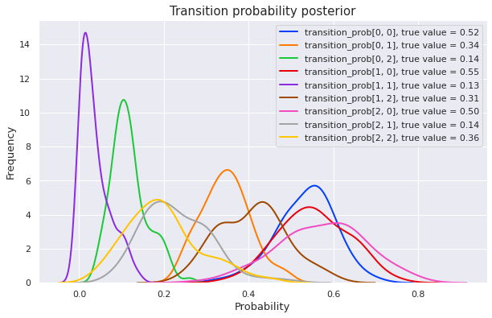
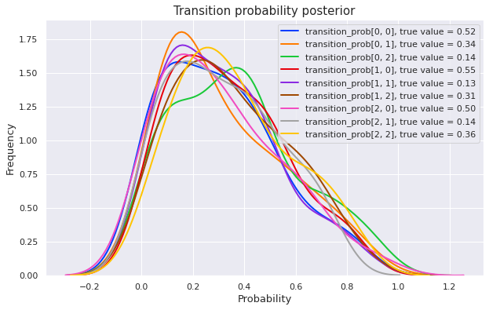
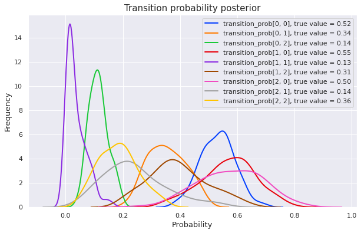

%matplotlib inline
import matplotlib.pyplot as plt
import seaborn as sns; sns.set(palette="bright")
import torch
import warnings; warnings.simplefilter("ignore", FutureWarning)
# this post assumes a Pyro version in dev branch (dated 2019-01-01):
# pip install git+https://github.com/uber/pyro@4e42613
import pyro
import pyro.distributions as dist
from pyro.infer.mcmc import MCMC, NUTS
pyro.set_rng_seed(1)Sampling Hidden Markov Model with Pyro
bayesian
hidden markov model
pytorch
pyro
To understand the multimodal phenomenon of unsupervised hidden Markov models (HMM) when reading some discussions in PyMC discourse, I decide to reimplement in Pyro various models from Stan. The main reference which we’ll use is Stan User’s Guide.
As in Stan user’s guide, we use the notation categories for latent states and words for observations. The following data information is taken from Stan’s example-models repository.
num_categories = 3
num_words = 10
num_supervised_data = 100
num_data = 600
transition_prior = torch.empty(num_categories).fill_(1.)
emission_prior = torch.empty(num_words).fill_(0.1)
transition_prob = dist.Dirichlet(transition_prior).sample(torch.Size([num_categories]))
emission_prob = dist.Dirichlet(emission_prior).sample(torch.Size([num_categories]))We need to generate data randomly from the above transition probability and emission probability. In addition, we will generate an initial category from the equilibrium distribution of its Markov chain.
def equilibrium(mc_matrix):
n = mc_matrix.size(0)
return (torch.eye(n) - mc_matrix.t() + 1).inverse().matmul(torch.ones(n))
start_prob = equilibrium(transition_prob)
# simulate data
categories, words = [], []
for t in range(num_data):
if t == 0 or t == num_supervised_data:
category = dist.Categorical(start_prob).sample()
else:
category = dist.Categorical(transition_prob[category]).sample()
word = dist.Categorical(emission_prob[category]).sample()
categories.append(category)
words.append(word)
categories, words = torch.stack(categories), torch.stack(words)
# split into supervised data and unsupervised data
supervised_categories = categories[:num_supervised_data]
supervised_words = words[:num_supervised_data]
unsupervised_words = words[num_supervised_data:]To observe the posterior, which are samples drawn from a Markov chain Monte Carlo sampling, we’ll make a convenient plotting function.
def plot_posterior(mcmc):
# get `transition_prob` samples from posterior
trace_transition_prob = mcmc.get_samples()["transition_prob"]
plt.figure(figsize=(10, 6))
for i in range(num_categories):
for j in range(num_categories):
sns.distplot(trace_transition_prob[:, i, j], hist=False, kde_kws={"lw": 2},
label="transition_prob[{}, {}], true value = {:.2f}"
.format(i, j, transition_prob[i, j]))
plt.xlabel("Probability", fontsize=13)
plt.ylabel("Frequency", fontsize=13)
plt.title("Transition probability posterior", fontsize=15)Supervised HMM
When we know all hidden states (categories), we can use a supervised HMM model. Implementing it in Pyro is quite straightforward (to get familiar with Pyro, please checkout its tutorial page).
def supervised_hmm(categories, words):
with pyro.plate("prob_plate", num_categories):
transition_prob = pyro.sample("transition_prob", dist.Dirichlet(transition_prior))
emission_prob = pyro.sample("emission_prob", dist.Dirichlet(emission_prior))
category = categories[0] # start with first category
for t in range(len(words)):
if t > 0:
category = pyro.sample("category_{}".format(t), dist.Categorical(transition_prob[category]),
obs=categories[t])
pyro.sample("word_{}".format(t), dist.Categorical(emission_prob[category]), obs=words[t])# enable jit_compile to improve the sampling speed
nuts_kernel = NUTS(supervised_hmm, jit_compile=True, ignore_jit_warnings=True)
mcmc = MCMC(nuts_kernel, num_samples=100)
# we run MCMC to get posterior
mcmc.run(supervised_categories, supervised_words)
# after that, we plot the posterior
plot_posterior(mcmc)Sample: 100%|██████████| 200/200 [00:54, 3.70it/s, step size=5.18e-02, acc. prob=0.963]
We can see that MCMC gives a good posterior in this supervised context. Let’s see how things change for an unsupervised model.
Unsupervised HMM
In this case, we don’t know yet which categories generate observed words. These hidden states (categories) are discrete latent variables. Although Pyro supports maginalizing out discrete latent variables, we won’t use that technique here because it is slow for HMM. We instead will use the forward algorithm to reduce time complexity.
def forward_log_prob(prev_log_prob, curr_word, transition_log_prob, emission_log_prob):
log_prob = emission_log_prob[:, curr_word] + transition_log_prob + prev_log_prob.unsqueeze(dim=1)
return log_prob.logsumexp(dim=0)def unsupervised_hmm(words):
with pyro.plate("prob_plate", num_categories):
transition_prob = pyro.sample("transition_prob", dist.Dirichlet(transition_prior))
emission_prob = pyro.sample("emission_prob", dist.Dirichlet(emission_prior))
transition_log_prob = transition_prob.log()
emission_log_prob = emission_prob.log()
log_prob = emission_log_prob[:, words[0]]
for t in range(1, len(words)):
log_prob = forward_log_prob(log_prob, words[t], transition_log_prob, emission_log_prob)
prob = log_prob.logsumexp(dim=0).exp()
# a trick to inject an additional log_prob into model's log_prob
pyro.sample("forward_prob", dist.Bernoulli(prob), obs=torch.tensor(1.))nuts_kernel = NUTS(unsupervised_hmm, jit_compile=True, ignore_jit_warnings=True)
mcmc = MCMC(nuts_kernel, num_samples=100)
mcmc.run(unsupervised_words)
plot_posterior(mcmc)Sample: 100%|██████████| 200/200 [05:24, 1.62s/it, step size=1.52e-01, acc. prob=0.860]
We can see that the posterior distributions highly spread over the interval \([0, 1]\) (though they seem to favor the first half). This posterior will not be useful for making further predictions.
Semi-supervised HMM
To fix the above issue, we will use supervised data for inference.
def semisupervised_hmm(supervised_categories, supervised_words, unsupervised_words):
with pyro.plate("prob_plate", num_categories):
transition_prob = pyro.sample("transition_prob", dist.Dirichlet(transition_prior))
emission_prob = pyro.sample("emission_prob", dist.Dirichlet(emission_prior))
category = supervised_categories[0]
for t in range(len(supervised_words)):
if t > 0:
category = pyro.sample("category_{}".format(t), dist.Categorical(transition_prob[category]),
obs=supervised_categories[t])
pyro.sample("word_{}".format(t), dist.Categorical(emission_prob[category]),
obs=supervised_words[t])
transition_log_prob = transition_prob.log()
emission_log_prob = emission_prob.log()
log_prob = emission_log_prob[:, unsupervised_words[0]]
for t in range(1, len(unsupervised_words)):
log_prob = forward_log_prob(log_prob, unsupervised_words[t],
transition_log_prob, emission_log_prob)
prob = log_prob.logsumexp(dim=0).exp()
pyro.sample("forward_prob", dist.Bernoulli(prob), obs=torch.tensor(1.))nuts_kernel = NUTS(semisupervised_hmm, jit_compile=True, ignore_jit_warnings=True)
mcmc = MCMC(nuts_kernel, num_samples=100)
mcmc.run(supervised_categories, supervised_words, unsupervised_words)
plot_posterior(mcmc)Sample: 100%|██████████| 200/200 [10:20, 3.10s/it, step size=9.60e-02, acc. prob=0.857]
The posterior is much better now. Which means that the additional information from supervised data has helped a lot!
Some takeaways
- When we don’t have much labeled data, consider using semi-supervised learning.
- Using additional algorithms (which include the forward algorithm in this case) can significantly improve the speed of our models.
For a variational inference approach to HMM, please check out this excellent example in Pyro tutorial page.